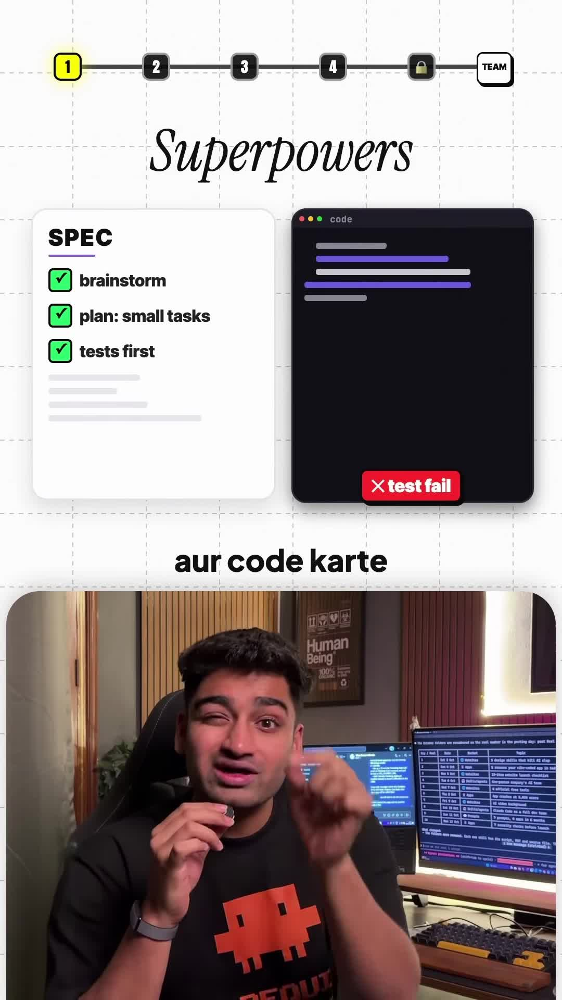
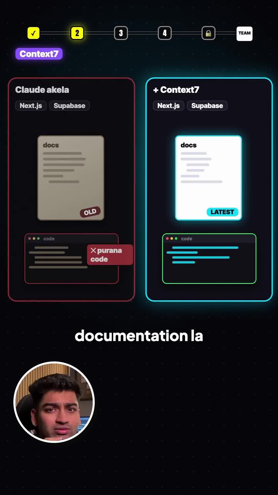
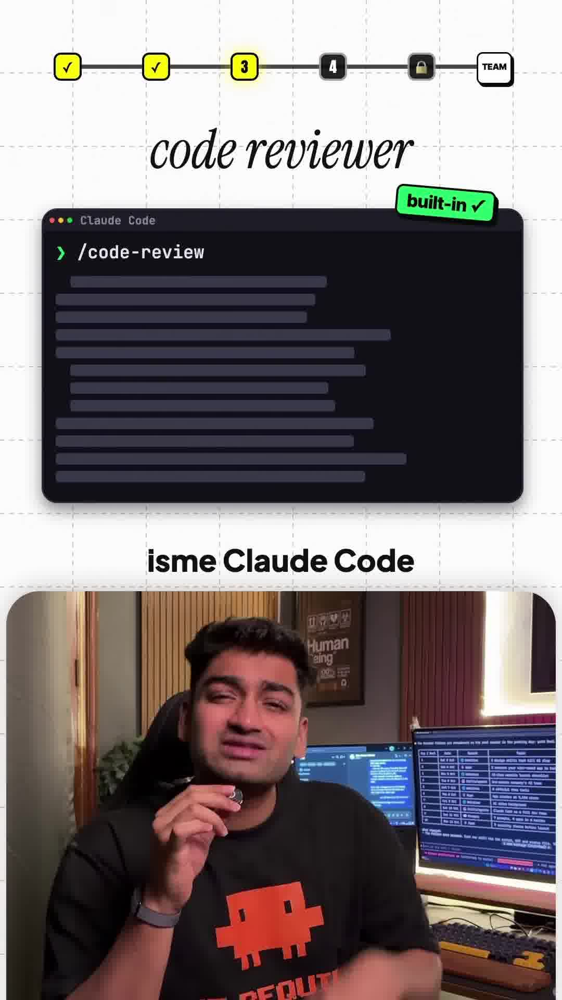

Executive Summary
Most developers treat CLI coding agents like Anthropic's Claude Code as isolated, solo programmers—prompting them for one-off functions or ad-hoc script edits. However, without structured role specialization and environment extensions, coding agents quickly hit context window degradation, hallucinatory package APIs, and regression bugs.
In this breakdown, AI educator Naman Soni demonstrates how to elevate Claude Code from a lone developer into a structured 5-role virtual engineering team using specialized custom skills, Model Context Protocol (MCP) servers, slash commands, and persona prompting.
Core Visual Demonstrations



The 5-Tool Engineering Matrix
1. Architect / Planner: "Superpowers" Spec Engine
Before writing a single line of application code, invoke a strict planning and specification phase:
- Brainstorming & Boundary Definition: Clarify constraints, data models, and edge cases.
- Micro-Task Decomposition: Split large objectives into atomic units of work (max 1–2 files per step).
- Test-Driven Harness: Author failing test assertions prior to feature implementation to prevent silent hallucinations.
2. Researcher: Context7 Live Documentation MCP
LLM pre-training weights frequently misremember the latest APIs for fast-moving ecosystems (such as Next.js 15+ App Router caching rules or Supabase SSR authentication helpers).
By connecting an MCP documentation proxy (such as Context7 or official SDK doc servers), Claude Code queries live upstream documentation before generating integration code, eliminating outdated methods and deprecated imports.
3. Quality Assurance: Automated `/code-review` Command
Configure a custom project slash command (e.g. .claude/commands/code-review.md) that forces the agent into an adversarial code review posture:
# .claude/commands/code-review.md
Review the git diff on the current branch against main.
Inspect:
1. Potential security vulnerabilities (injection, auth bypass, unvalidated input).
2. Missing error handling and unhandled Promise rejections.
3. Unnecessary dependency bloat or duplicate helper logic.
4. Compliance with existing repository design patterns.4. Refactoring Specialist: Code Simplifier & Cleaner
LLMs generate redundant abstractions, verbose comments, and dead branches over long coding sessions. A dedicated simplification pass prompts the model to:
- Delete temporary debugging logs and dead imports.
- Collapse nested conditionals and apply idiomatic language constructs.
- Verify formatting with local linters (e.g. Ruff or Prettier).
5. Product Lead / Executive Review (The YC CEO Persona)
Engineers often over-engineer secondary features. Ground the agent with an executive product lead prompt (e.g. inspired by Garry Tan / Y Combinator principles):
"Evaluate this feature through the lens of a venture-backed startup CEO: Does this code deliver direct user value? Are we building unnecessary complexity before product-market fit? What is the simplest path to shipping this to real users today?"